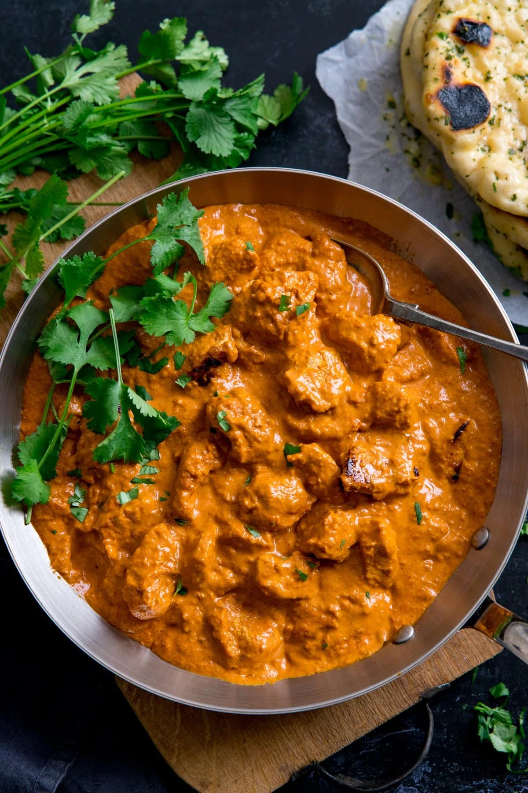

Chicken Curry Recipe

This butter chicken dish is a lovely rich curry - without the spicy heat
of some curries. It comes with plenty of sauce to soak into the rice!.
Rich and creamy butter chicken recipe, a little bit of up front prep is
all you need, then you can cook this dish in less than 30 minutes!
Ingredients
- Chicken
- Garlic
- Butter
- Ginger
- Paprika
- Onion
- Salt
- Curry Powder
- Sugar
- Cream
Steps
- Marinade chicken and leave for 1 hour (up to overnight)
- Blend onion, garlic and ginger together
- Heat butter and oil in large pan over medium-high heat
- Add the blended mix from step 2 and cook for 5-6 minutes
- Add marinated chicken and cook for 3-4 minutes until sealed
-
Add salt curry powder and other spices stir for 1-2 minutes then simmer
for 15 minutes
- Stir in cream and allow heat through
- Serve over rice